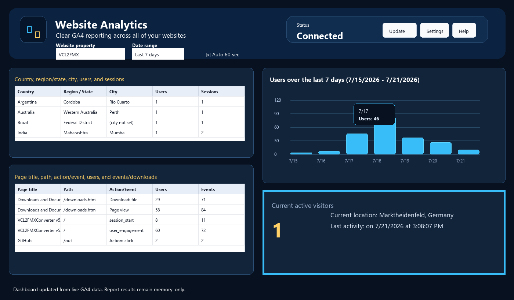

Realtime Activity

What Realtime shows
- The lower-right panel shows current active visitors returned by GA4 for the selected property.
- It also shows the current location and last activity time when GA4 supplies location details.
- The last activity text resets when the selected property changes so stale location text is not carried between sites.
Why it may show zero
- Zero can be normal for low-traffic sites when nobody is active in the realtime window.
- Realtime and historical report rows can differ briefly because GA4 realtime and standard reports are separate reporting surfaces.